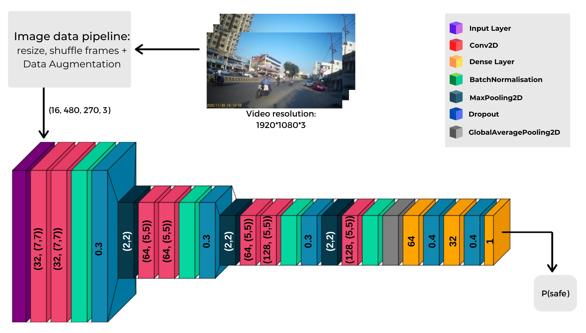
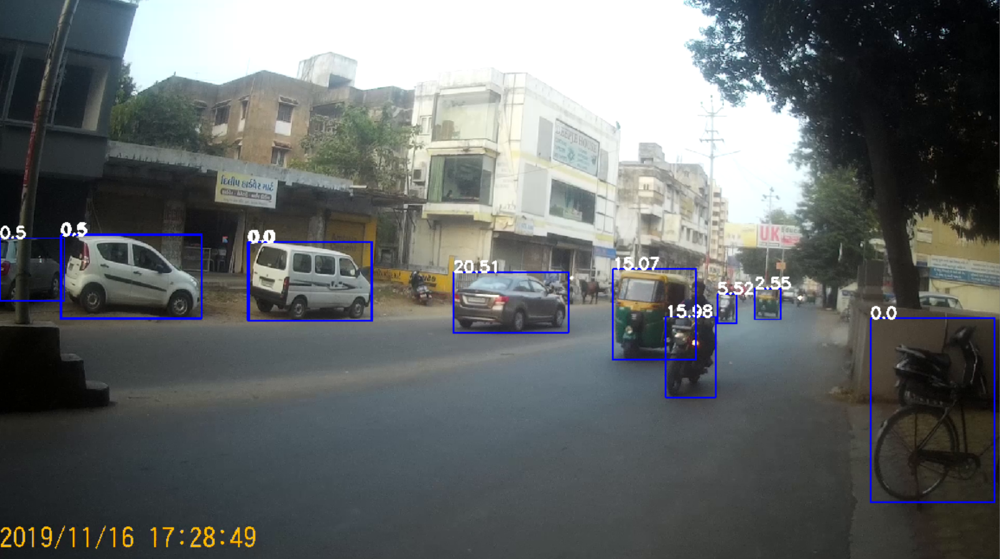
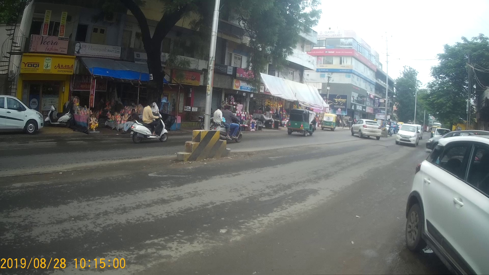
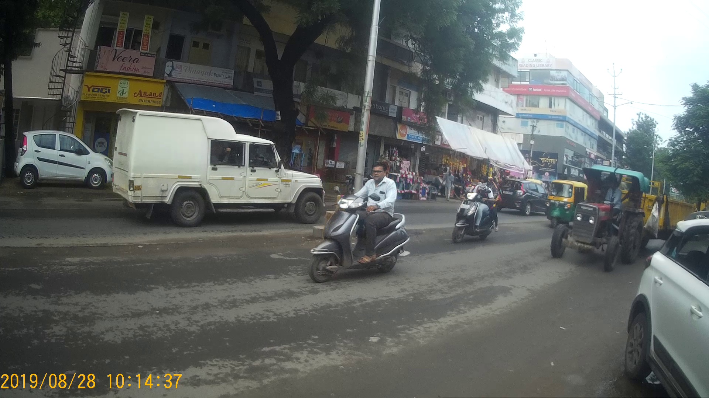
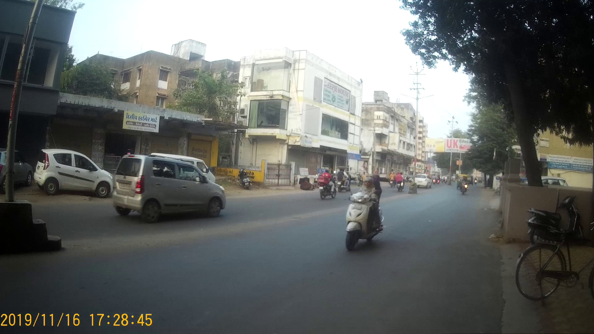
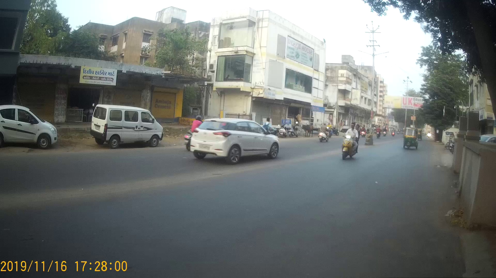

Approach 3: Deep Learning based approach
Deep Learning approach has proven its significance many
times that it can perform very well without disclosing any
complexities and requiring any special kind of internmediate
training phases.
So, we went further with implementing DL based approaches. For that, we have divided out dataset in such manner:
Approach 3.1 consists of MobileNetv2 model - which is used widely to run on small and low configuration based devices such as mobile and in this project - on Nvidia Jetson Nano.

So, we went further with implementing DL based approaches. For that, we have divided out dataset in such manner:
- Training Dataset - 74 videos
- validation Dataset - 15 videos
- Testing Dataset - 15 videos
Approach 3.1 consists of MobileNetv2 model - which is used widely to run on small and low configuration based devices such as mobile and in this project - on Nvidia Jetson Nano.
So in this pre-trained model, to specify the
custom input image shape [270,480]
for this project, We have added new additional
layers to build a custom MobileNetV2 architecture
and train it on our training video dataset, in
addition to applying testing and validation sets in
model architecture training process. The python
script for this architecture is available
here.
Model performance
accuracy, speed and overfitting issues
Due to issues we were facing with custom MobileNetv2 model architecture and such standard architectures are built and used for general purpose applications, we moved to next DL approach that is to create our own custom model from scratch for application-specific purpose in the project.

In this approach, we are able to overcome the issues
of overfitting on the training dataset and achieve
better accuracy metrics for the same. The python
script for this architecture is available
here.
Model performance
accuracy, speed and performance issues
Our model with dilated convolutions here.
Feature Extraction


The feature extraction logic is same as that of Approach 1.2, with just one feature addition as per the speed of vehicles. It is very intuitive that speed of vehicles is a very important aspect to be considered while crossing roads. So, we have added 6 new features in this approach, we have considered maximum speed (of any vehicle) in each region as a feature. The Python implementaion for calculating speed of vehicles can be found here.
Classification Model

Preprocessing tasks:
- Train-test split (using 80 videos for training, 24 for testing)
- Generating features and labels dataframe including speed of vehicles in every region
- Feature Scaling using MinMax Scaler
- We used SVM(Support Vector Machine) to train a classification model to predict if a frame is safe/unsafe.
- Training accuracy : 85.91% , Testing accuracy: 83.34%
- Mean average precision on test data: 0.74
- Python implementaion for the same can be found here.
Sample Prediction Outputs

True Positive


True Negative


False Positive

False Negative